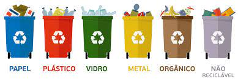

Descarte
O descarte incorreto de lixo eletrônico é considerado um problema, pois os componentes químicos podem ser prejudiciais ao meio ambiente e à saúde humana. Anualmente, mais de 53 milhões de toneladas de equipamentos eletroeletrônicos e pilhas são descartadas em todo o mundo, segundo o The Global E-waste Monitor 2020. Na outra ponta, o número de dispositivos, no mundo, cresce cerca de 4% por ano. Apenas o Brasil descartou, em 2019, mais de 2 milhões de toneladas de resíduos eletrônicos, sendo que menos de 3% foram reciclados, de acordo com o relatório desenvolvido pela Universidade das Nações Unidas. A pesquisa mostrou que, no Brasil, 16% descartam com certa frequência algum eletroeletrônico no lixo comum. Esse tipo de descarte não permite a reciclagem das matérias-primas presentes nos aparelhos. Um terço dos entrevistados (33%) nunca ouviu falar em pontos ou locais de descarte correto para lixo eletrônico. A maioria (87%) disse guardar algum tipo de eletroeletrônico sem utilidade em casa. Mais de 30% fica com eles por mais de um ano. Ao todo, foram entrevistadas para o estudo 2.075 pessoas de 18 a 65 anos, entre os dias 14 e 24 de maio de 2021. A pesquisa foi feita no Distrito Federal e em 13 estados: São Paulo, Rio de Janeiro, Minas Gerais, Espírito Santo, Bahia, Ceará, Pernambuco, Rio Grande do Sul, Paraná, Santa Catarina, Pará, Goiás e Mato Grosso do Sul.
O que diz a lei
No Brasil, a destinação correta do lixo eletrônico está prevista na Política Nacional de Resíduos Sólidos (Lei 12.305/2010) e é regulamentada pelo Decreto Federal 10.240/2020. Este dispositivo define metas para os fabricantes, importadores, distribuidores e comerciantes sobre a quantidade de pontos de Entrega Voluntária (PEV) que devem ser instalados, o número de cidades atendidas e o percentual de aparelhos eletroeletrônicos a serem coletados e destinados corretamente. Pelo decreto, as empresas devem, gradualmente, até 2025, instalar PEVs nas 400 maiores cidades do Brasil e coletar e destinar o equivalente em peso a 17% dos produtos colocados no mercado em 2018, ano definido como base.
Como Reciclar Resíduos Eletrônicos no Brasil?
Existem várias opções para reciclar Resíduos Eletrônicos no Brasil, como pontos de coleta nas lojas de eletrônicos, centros de reciclagem e campanhas especiais de reciclagem promovidas por empresas e governos.
como fazer o descarte correto de lixos

O descarte correto deve ser um hábito
Hoje são 29%, em 2021 eram 33%. Porém, 25% não se sentem responsáveis pela reciclagem dos resíduos eletrônicos. Mas é preciso dizer que a Política Nacional de Resíduos Sólidos define responsabilidade compartilhada para esse tipo de iniciativa, inclusive a dos consumidores.